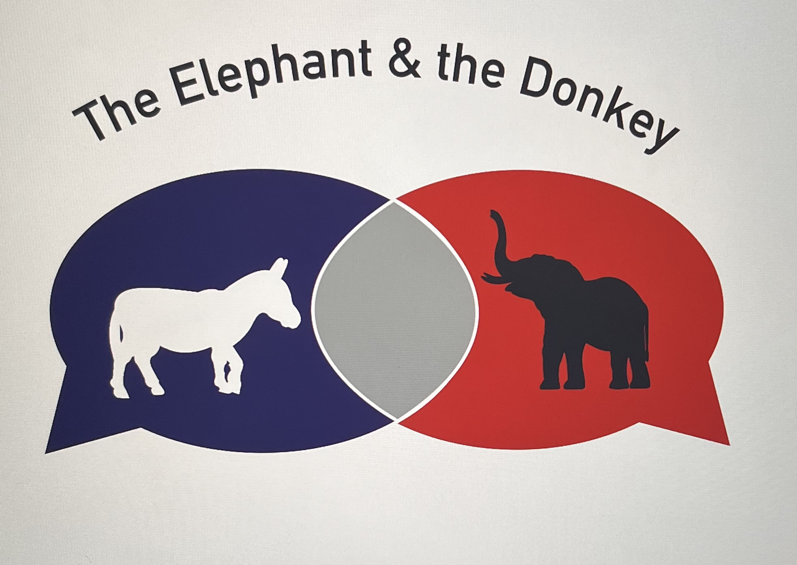

This logo was desinged my 2nd year of college in a User Experience Course. We were presented with the task of designing the beginning stages of an app that could be utilized in Harrisonburg. I designed an app that allowed for residents to find new coffee shops in town. As the app was callled "Filtered Coffee", I designed an app that would be a good display of that title. I used Adobe Illustrator for this design.

This logo was desinged the summer of my 3rd year of college. My friend had wanted to start a political podcast and had asked me to design the logo for it. I used Illustrator and I wanted to highlight the conversation by utlizing speech bubbles. I also used the animals that represent both parties so the listeners can distunguish that its a political podcast.
